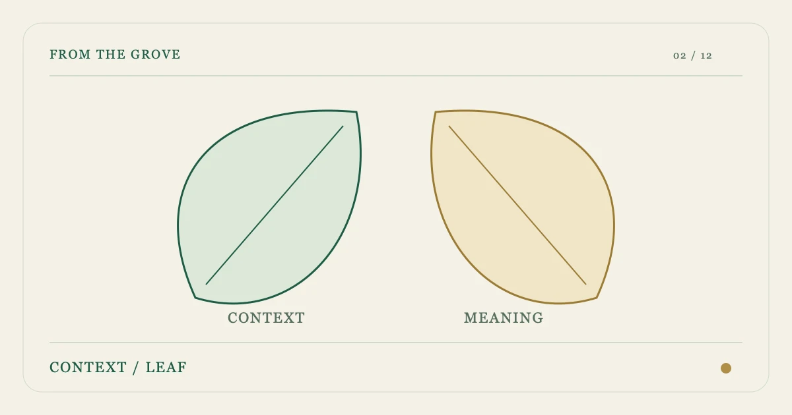

ROOT REFERENCE / 02
%%C2_TITLE%%
%%C2_INTRO%%

LEAF / 01%%C2_H2_1%%
%%C2_TEXT_1%%
- %%C2_M_LABEL_1%%
- %%C2_M_TEXT_1%%
- %%C2_M_LABEL_2%%
- %%C2_M_TEXT_2%%
LEAF / 02%%C2_H2_2%%
%%C2_TEXT_2%%
小屏可在表格内横向滚动。
| %%C2_TABLE_COL_1%% | %%C2_TABLE_COL_2%% | %%C2_TABLE_COL_3%% |
|---|---|---|
| %%C2_TABLE_ROW_1%% | %%C2_TABLE_CELL_1_1%% | %%C2_TABLE_CELL_1_2%% |
| %%C2_TABLE_ROW_2%% | %%C2_TABLE_CELL_2_1%% | %%C2_TABLE_CELL_2_2%% |
| %%C2_TABLE_ROW_3%% | %%C2_TABLE_CELL_3_1%% | %%C2_TABLE_CELL_3_2%% |
LEAF / 03%%C2_H2_3%%
%%C2_TEXT_3%%
%%C2_QUOTE%%
%%C2_QUOTE_ATTRIBUTION%%
LEAF / 04%%C2_H2_4%%
%%C2_TEXT_4%%
LEAF / 05%%C2_H2_5%%
%%C2_TEXT_5%%
常见问题
%%C2_FAQ_Q1%%
%%C2_FAQ_A1%%
%%C2_FAQ_Q2%%
%%C2_FAQ_A2%%
来源记录
- %%C2_SOURCE_LABEL_1%%
%%C2_SOURCE_NOTE_1%%
- %%C2_SOURCE_LABEL_2%%
%%C2_SOURCE_NOTE_2%%
核对日期：